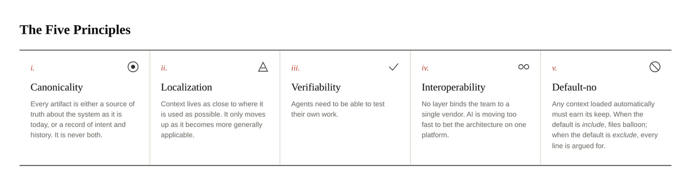
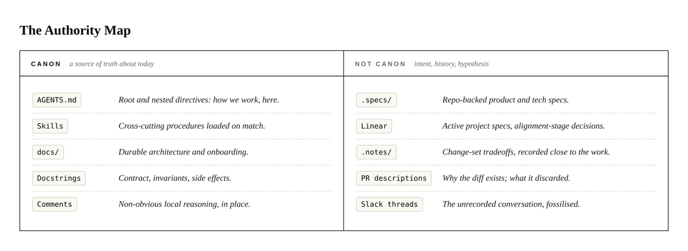
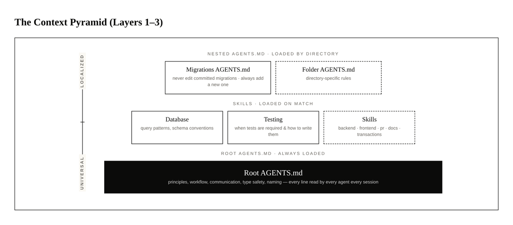

总结
代码库同时是两样东西：跑在生产里的源代码，以及 coding agent 用来做决策的上下文。
- Agent 每次任务都要重新“入职”代码库；小不一致、矛盾、缺口会快速复利。
- 五条原则：canonicality、localization、verifiability、interoperability、default-no。
- 区分 canon（当前事实）和 non-canon（计划、历史、意图）。
- 六层架构：根 AGENTS.md → 嵌套 AGENTS.md → skills → subagent roles → 统一 MCP → tests。
- 重写 AGENTS.md：从“描述代码库”改成“操作指令”；跨目录知识移到 skills。
- 清理了 20–30% 的代码库，让现有代码达到新标准。
- 结果：token 使用量 5 倍，commit 速度 2.5 倍。
原文逐段对照翻译
翻译说明：以下按原文顺序逐段翻译，保留五条原则、六层架构、清理与结果；中文以自然、准确为目标。
问题：agent 每次都要重新入职
At Basis, we're obsessed with this question: How do we make our codebase ergonomic for agents? There are decades of learnings in software engineering on what a well-designed codebase looks like for humans. How do we evolve that for agents?
在 Basis，我们一直追问：如何让代码库对 agent 更 ergonomic（顺手、好用）？软件工程有几十年的经验，告诉我们“对人类友好的代码库”长什么样；这套东西要怎么演进到 agent 场景？
The Atlas team is responsible for internal agents and context. Our product is the codebase itself. A codebase is two things at once: the source code that runs in production, and the context that coding agents use to make decisions. In three months, token usage per developer increased more than 5x and commit velocity increased by 2.5x.
Atlas 团队负责内部 agent 和上下文，我们的产品就是代码库本身。代码库同时是两样东西：生产环境运行的源代码，以及 coding agent 用来做决策的上下文。三个月内，每位开发者的 token 使用量增长 5 倍以上，commit 速度增长 2.5 倍。
While coding agents are capable in isolation, they are prone to mistakes when dropped into a working codebase without supporting infrastructure. This is not a new problem; it's also true of any new hire. But unlike a human, an agent has to "onboard" to the codebase every single trajectory.
Agent 在隔离环境里很强，但被丢进没有配套基础设施的真实代码库时很容易犯错。这不是新问题，新员工也一样。区别是：人只入职一次，agent 每个 trajectory 都要重新入职。
五条原则
Canonicality: every artifact in the repo is either a source of truth about the system as it is today, or a record of intent and history. It is never both. Localization: context should live as close to where it is used as possible. It only moves up as it becomes more generally applicable.
Canonicality：仓库里每个 artifact 要么是“当前系统的事实”，要么是“意图/历史记录”，不能两者兼是。Localization：上下文应尽可能靠近使用它的地方，只有变成普遍适用时才上移。
Verifiability: agents need verification of their work. We built mechanisms to enforce that, including sub-agent roles, pre-commit hooks, and tests. Interoperability: no layer of the architecture binds the team to a single vendor. Default-no: any context that is loaded automatically must be scrutinized closely. Tokens that earn no behavior are a tax on every session.
Verifiability：agent 需要验证自己的工作，我们用 subagent 角色、pre-commit hooks、测试来强制。Interoperability：架构任何一层都不绑定单一 vendor。Default-no：任何自动加载的上下文都要严格审查；不产生行为的 token 是对每个会话的税。

Canon vs Non-canon
Canon is material a coding agent should treat as a source of truth about how the system works today. It includes root and nested AGENTS.md files, skills, the docs/ directory, and inline code comments and docstrings. Not canon is useful context that is not a source of truth about the current codebase: plans and specs, and historical rationale.
Canon 是 agent 应视为“当前系统如何工作”的事实材料：根/嵌套 AGENTS.md、skills、`docs/`、行内注释和 docstring。Non-canon 是有用但不代表当前事实的上下文：计划和规格、历史理由。
The potential mistake is treating not-canon as canon. A Linear ticket may describe a feature that was never implemented, or was implemented differently than planned. If the agent reads that ticket and treats it as truth, it will be confused about the correct state of the world.
错误在于把 non-canon 当 canon。一个 Linear ticket 可能描述从未实现、或实现方式完全不同的功能。agent 如果把它当事实，就会对世界状态产生错误理解。
Why allow agents to see non-canonical information at all? Because it can be extremely valuable when parsing complex situations. In a pre-agent world, the answer to "Why did we write this code this way?" was a Slack DM to the author. Now the answer is .notes/.
为什么还让 agent 看 non-canon？因为它在理解复杂情况时很有价值。在 pre-agent 时代，“为什么这样写”的答案是给作者发 Slack；现在答案是 `.notes/`。

六层架构
Layer 1: Root AGENTS.md. Our engineering principles, workflow definitions, and communication patterns. Loaded in every session. Currently around 300 lines. The most high-leverage file in the repository. Layer 2: Nested AGENTS.md files. More than 100 across the monorepo, each scoped to its directory.
Layer 1：根 AGENTS.md，放工程原则、工作流定义、沟通模式，每个会话加载，目前约 300 行，是仓库里杠杆最高的文件。Layer 2：嵌套 AGENTS.md，monorepo 里 100 多个，每个限定到自己的目录。
Layer 3: Skills. The .agents/skills/ directory contains skill packages covering backend architecture, frontend patterns, testing standards, documentation conventions, and domain-specific knowledge. Layer 4: Sub-agent roles. The .agents/roles/ directory defines specialized agents, each with its own context window.
Layer 3：Skills，`.agents/skills/` 覆盖后端架构、前端模式、测试标准、文档约定、产品领域知识。Layer 4：Sub-agent roles，`.agents/roles/` 定义专用 agent，每个有自己的上下文窗口。
The verifier runs diff-scoped tests and pre-commit hooks, then reports pass/fail with actionable failure details. The standards-enforcer validates code against all applicable AGENTS.md files and skills, checking for overly defensive programming, dead code, and missing test coverage.
`verifier` 跑 diff 范围的测试和 pre-commit hooks，报告 pass/fail 和可操作失败细节；`standards-enforcer` 按所有适用的 AGENTS.md 和 skills 校验代码，检查过度防御、死代码、缺失测试覆盖。
Layer 5: Unified MCP. Our unified MCP server gives agents access to Linear for project context, Slack for team communication, Better Stack for logs, PostHog for analytics, and dev database access for validation. Layer 6: Tests. Automated enforcement that catches standard violations before they reach CI.
Layer 5：统一 MCP，让 agent 访问 Linear（项目上下文）、Slack（团队沟通）、Better Stack（日志）、PostHog（分析）、dev 数据库（验证）。Layer 6：Tests，自动化强制，在进 CI 前抓住标准违规。

重写 AGENTS.md
We found about 20 AGENTS.md files that had been written before we codified our principles, and they were in rough shape. First, many described the codebase to the agent rather than instructing them. "SRC is where we put all our source code" is not useful; the agent already knows what src/ is.
我们找到约 20 个在原则成文前写的 AGENTS.md，状态很差。第一，很多是在“描述代码库”，而不是“指导 agent”。“SRC 是放源代码的地方”没用，agent 早就知道 `src/` 是什么。
Second, when our AGENTS.md files did include instructions, they were often all high-priority, "must-follow" directives. When you tell an agent in strongly worded terms that everything is important, it makes nothing important. Third, knowledge that applied in multiple scenarios had no good home.
第二，当文件确实有指令时，往往全是高优先级“必须遵守”。当你用强烈措辞告诉 agent“一切都很重要”，就等于什么都不重要。第三，跨场景知识没有合适的存放位置。
Five authoring rules: instruction quality—write for agents, not humans; hierarchy-first placement—place context at the most specific directory that fully owns it; resilient references—use descriptive names rather than exact paths; text-only, search-friendly content; default-no—would an agent reasonably need this for most tasks in this directory?
五条写作规则：指令质量——为 agent 写，不是为人类写；层级优先——把上下文放在最具体、完整拥有它的目录；弹性引用——用描述性名字而不是精确路径；纯文本、可搜索；default-no——这个目录里大多数任务真的需要这条信息吗？
The team rewrote AGENTS.md across about 20 folders, migrating contextual knowledge to skills and replacing descriptive content with operational instructions. The root AGENTS.md is currently around 300 lines, and every line has been argued over.
团队重写了约 20 个目录的 AGENTS.md，把上下文知识迁移到 skills，把描述性内容换成操作指令。根 AGENTS.md 目前约 300 行，每一行都被争论过。
清理与维护
Ryan Moffat used coding agents to audit every directory against the newly codified instructions, producing a list of nine projects with thousands of lines of violations. We then deployed agents to fix the problems that agents had perpetuated.
Ryan Moffat 用 coding agent 按新指令审计每个目录，产出 9 个项目、数千行违规。然后我们部署 agent 去修 agent 自己造成的问题。
The rewrite touched an estimated 20 to 30 percent of the entire codebase across the nine completed projects. There is no shortcut. An agent-native codebase demands more local correctness than a human-only one, because every file is context and the agents are constantly onboarding.
重写触及整个代码库约 20–30%，跨 9 个项目。没有捷径。agent 原生代码库比纯人类代码库要求更高的局部正确性，因为每个文件都是上下文，而 agent 一直在 onboarding。
Maintenance starts with owners. Every canonical artifact carries an explicit owner field in YAML frontmatter. A CI/CD check ensures any new skill or non-production markdown file has a corresponding owner. A scanner runs daily to find staleness, contradictions, duplicated instructions, and broken references; workers pick up tickets and implement small fixes.
维护从 owner 开始：每个 canonical artifact 的 YAML frontmatter 都有 owner 字段；CI/CD 检查新 skill 或非生产 Markdown 是否有 owner；每日 scanner 找 stale、矛盾、重复指令、断链；worker 从 ticket 取小修复。
Automated context maintenance is only possible because we agreed on what is canonical. A scanner can sweep AGENTS.md files and skills for contradictions because canonical context is supposed to agree with itself. Non-canonical context is allowed to disagree with itself.
自动维护只有在“什么算 canonical”达成一致后才可能。Scanner 能扫 AGENTS.md 和 skills 的矛盾，因为 canonical 上下文按定义应该自洽；non-canon 允许自相矛盾。
验证闭环与结果
We expanded our testing frameworks. Bhavdeep built the testing infrastructure: unit tests, integration tests, fixtures, markers, CI integration. The Atlas team embedded testing standards into the agent behavior layer. We treated agent behavior as a first-class requirement rather than an afterthought.
我们扩展了测试框架。Bhavdeep 建测试基础设施：单元、集成、fixture、marker、CI；Atlas 团队把测试标准嵌入 agent 行为层。我们把 agent 行为当成一等需求，而不是事后补充。
We started with token usage per developer. The hypothesis was that if we solved the problems making coding agents perform poorly, engineers would trust agents to do more work and manage more agents. We set a goal of 5x token usage in one quarter. Weekly commit velocity increased by 2.5 times.
我们从每位开发者的 token 使用量开始。假设是：解决 agent 表现差的问题后，工程师会更信任 agent、管理更多 agent。目标是一个季度 5 倍 token 使用量；同期每周 commit 速度增长 2.5 倍。
Coding agents are a new kind of consumer of your codebase, with their own failure modes, their own appetite for context, and their own demands on what counts as a well-organized repo. The ones who take that seriously will find the work is bigger than expected, the principles are non-obvious, and the payoff is substantial.
Coding agent 是代码库的一类新消费者，有自己的失败模式、上下文胃口，以及对“好仓库”的要求。认真对待的人会发现：工作比预期大，原则不显然，但回报很可观。
学习者视角
关键收获
- 代码库是 agent 的产品。 不只是“代码能跑”，还要“agent 能理解、能验证、能安全修改”。
- Canonicality 是最重要的区分。 事实、计划、历史混在一起，agent 就会把假设当现实。
- Localization + default-no 控制上下文成本。 上下文放得越近越不容易漏；默认不加载，每一行都要挣位置。
- 六层架构是完整的 agent 操作系统。 指令、技能、角色、工具、测试，各司其职。
- 清理是必要成本。 想让 agent 写出符合标准的代码，先让现有代码成为标准。
放回课程里看
这篇是 Week 5 的核心：它把 Week 4 的 AGENTS.md、skills、hooks 从“单文件配置”提升到“整个代码库的架构”。它和 AGENTS.md 是微观/宏观的关系。
一个反直觉点
很多人以为 agent 原生代码库就是多写几个 AGENTS.md。Basis 的结论是：要重写 20–30% 的代码，让现有代码达到新标准。 没有清理，指令层只是空中楼阁。
拓展
思考题
- 你的仓库里，哪些 artifact 是 canon，哪些是 non-canon？有没有混在一起？
- 你的根 AGENTS.md 有多少行？每一行都“挣得位置”了吗？
- 如果只能建六层中的三层，你会选哪三层？为什么？
- 自动维护 context 的最大风险是什么？
练习
为你的仓库做一次 agent 原生审计：
- 列出所有上下文来源；
- 标记 canon / non-canon；
- 找出一个“把 non-canon 当 canon”的风险；
- 把一条描述性 AGENTS.md 改成操作指令；
- 设计一个 owner + CI 检查。